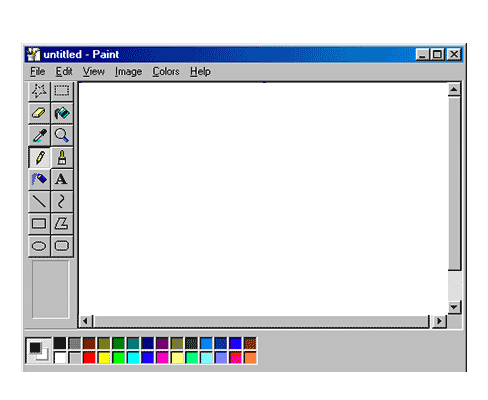
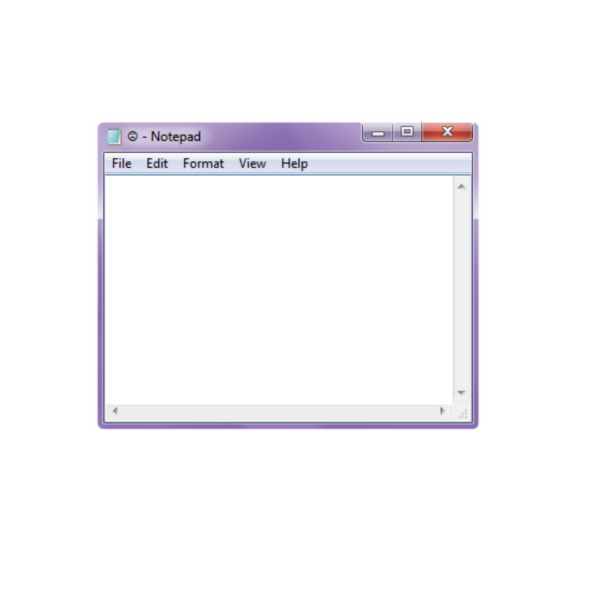
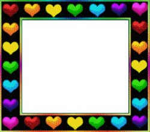

i find this piece of text very interesting. I like how it's formatted, and every sentence provokes thinking. The logic is so odd but completely understandable. The spectacle is an interesting concept to me because I love to use images and I communicate with people through images every single day. It's weird to think that two living things can have a full conversation with only still images. Social media platforms, like instagram, twitter, snapchat, etc., all make up the spectacle. WE all contribute to making a housed collection of images (of history) which is so mind blowing and crazy and amazing. I feel lucky to be a part of it.
  